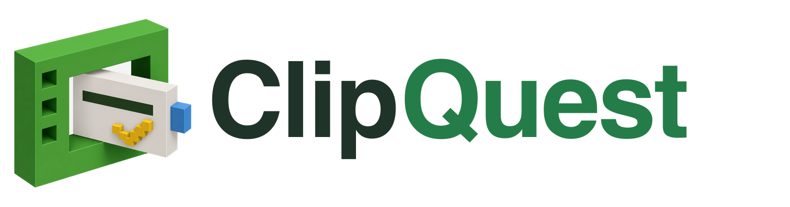
Turn YouTube lessons into real mastery.
Paste a public YouTube lesson, build an evidence-grounded quiz inside your own browser, and learn through immediate corrective feedback.
HHCC 2026Iteration TrackEducation Theme
| Field | Entry |
|---|---|
| Project name | ClipQuest |
| Team |
404-Waifu-Not-Found · @404-Waifu-Not-Found/cos
|
| Members | UnoxyRich · Layla · Justin-Yonardo · JimmyfaQwQ |
| Track | Iteration Track |
| Theme | Education — accessible, engaging learning experiences with AI feedback |
| Live product | https://clipquest.ccwu.cc |
| Repository | https://github.com/404-Waifu-Not-Found/HHCC2026 |
| Document | Project description & iteration report — 22 August 2026 |
One week before HHCC 2026, this project existed only as a written README describing the product idea. There was no implemented product flow, no frontend, no quiz engine, no persistence layer, no browser extension, no native client, and no deployment. Every line of product code in this repository was written during the 36-hour challenge. The Git history is the proof: all 490 commits carry timestamps inside the official hacking period of 21–22 August 2026.
404-Waifu-Not-Found · HackHarvard China Challenge 2026 · Iteration Track, Education theme · Apache-2.0
ClipQuest turns any public YouTube lesson into an evidence-grounded mastery quest. A learner pastes a YouTube link, chooses the question types they want — multiple-choice, true/false, short answer — confirms the lesson, and immediately starts answering questions that were generated from the video's own captions. Every answer receives immediate corrective feedback; every completed lesson becomes durable progress with mastery ranks, scheduled review, and a personal Library.
The architecturally unusual decision in ClipQuest is where the AI runs. Generation does not happen on our server. A Chrome Manifest V3 extension — the ClipQuest Local AI bridge — acquires the video's public captions inside the learner's own browser, normalizes them to plain text, and calls DeepSeek directly using the learner's own API key. Our Cloudflare Worker never sees the key, the captions, the prompt, or the raw model output. It only ever receives questions that have already been validated locally, and it stores them in strict ordinal order.
That boundary is not just a privacy feature. It is what makes the product economically sustainable — our per-learner inference cost is exactly zero — and it is what forced the hardest engineering in the project: if the model runs on the far side of an untrusted browser, the server has to be able to reject anything malformed without ever falling back to invented content, and the client has to be able to repair a failed question without destroying the learner's progress.
ClipQuest is live at https://clipquest.ccwu.cc, deployed on Cloudflare Workers with D1, KV, and R2, and reachable throughout judging.
Under the Iteration Track rules, we submitted our pre-event material one week before HHCC 2026. That material was a short written README describing the product idea — the concept of converting YouTube lessons into quizzes, and a sketch of the intended learner flow.
What did not exist before the event:
All code in this repository was written during the official 36-hour
hacking period.
We did not bring a partially built codebase into the event. There is no
hidden, commented-out, or pre-staged functional code. The complete Git
history is public and every commit is timestamped inside the event
window (21–22 August 2026), so this claim is directly verifiable by the
organizing committee with
git log --format='%ad %s' --date=iso.
Because the starting point was a written idea rather than a half-finished product, the before-and-after comparison in section 14 is unusually clean. Every row in that table moves from "did not exist" to "shipped and deployed." The iteration log in section 13 records the specific product risk that motivated each stage, so the improvement logic — not just the improvement volume — is visible.
Educational video is the most abundant free learning resource on earth, and it is also the most passive. A learner can watch a 40-minute lecture, feel that they understood it, and retain very little of it a week later. This gap between fluency (it felt easy while watching) and retention (can you actually recall it later) is one of the best-documented effects in learning science, and video is unusually good at producing it, because playback never asks the learner to produce anything.
The standard workarounds all fail for different reasons:
Retrieval practice — being made to produce an answer from memory — is dramatically more effective for durable retention than re-watching or re-reading. So the intervention worth building is not a better summary; it is a low-friction way to convert any video the learner already chose into retrieval practice, with the questions grounded in the actual spoken content, and with feedback delivered at the moment the learner is still holding the question in mind.
Three constraints followed from that thesis, and they shaped the entire architecture:
ClipQuest is deliberately split so that the untrusted, expensive, privacy-sensitive work happens locally and the trusted, cheap, durable work happens at the edge.
The single most important property of this diagram is the direction of trust. The Worker treats the extension as hostile input. Anything that is malformed, out of order, duplicated, wrongly typed, or answer-inconsistent is rejected — and critically, rejection never produces a fallback question. There is no code path in the Worker that can generate quiz content. A learner either gets a real, validated, caption-grounded question, or they get an explicit failure state.
| Module | What it does |
|---|---|
| Link-first import | Validates a public YouTube URL, fetches metadata, and renders a lesson preview so the learner confirms they picked the right video before any generation cost is incurred. |
| Caption acquisition | Reads public caption tracks in-browser, preserves the complete ordered segment set, strips timestamps, joins rolling auto-caption fragments, and emits clean plain text. Never downloads, decodes, or transcribes audio. |
| Progressive generation | Requests question 1 alone, validates it, and opens the attempt immediately; remaining questions stream in bounded consecutive batches in the background while the learner is already answering. |
| Quiz engine | Multiple-choice, true/false, and short-answer items in 5-, 10-, or 15-question banks, with a seeded and balanced type plan that avoids long runs of a single format. |
| Immediate feedback | Every submission is graded and explained at once — correct/incorrect state, the correct answer, and the reasoning — rather than deferred to the end of the quiz. |
| Deterministic short-answer grading | The Worker grades prose answers from a bounded stored rubric of required ideas and full-credit variants, normalizing pronouns, safe acronyms, and conservative aliases. No model call, so grading is reproducible and the learner's writing never leaves our boundary to a third party. |
| Completion recap | At the end of an attempt, the learner sees exactly which concepts they missed, with the correct answer and reasoning, forming a targeted review list instead of a bare score. |
| Library and mastery | Completed lessons persist with colour-coded mastery ranks, progress bars, review state, due reviews, and saved lessons — turning one-off results into a spaced-repetition loop. |
| Community layer | Server-tracked learning time, a leaderboard, public profiles with avatars and completed-quiz counts, and a GitHub-style yearly activity calendar. Private account details stay hidden. |
| Operations console | Server-side roles, audited privileged actions, processing overview, and user administration — with generic Better Auth admin endpoints blocked. |
| Cross-platform clients | Web plus an installable PWA, the Chrome extension bridge, and native iOS and Android paths that share the same local quiz engine and the same privacy boundary. |
Each learner-facing feature exists because it implements a specific, well-evidenced learning mechanism. This mapping was written before the features, not after them.
| Mechanism | ClipQuest feature | Why it is implemented this way |
|---|---|---|
| Retrieval practice | Mandatory question answering after (or during) the lesson | Producing an answer from memory strengthens retention far more than re-watching. The learner cannot passively advance. |
| Immediate corrective feedback | Per-question grading with the correct answer and reasoning | Feedback delivered while the item is still in working memory corrects the misconception rather than reinforcing it. |
| Generation effect | Short-answer items with deterministic rubric grading | Free recall produces stronger encoding than recognition, so we kept prose answers instead of shipping multiple-choice only. |
| Desirable difficulty | Balanced mixed-format plans; option order re-randomized per view | Prevents position memorization and pattern-matching, so the learner has to actually retrieve the content. |
| Error-focused review | Completion recap listing only missed concepts | Directs limited study time at the gap rather than at material already mastered. |
| Spaced repetition | Library mastery ranks, review state, and due reviews | Distributed practice over time beats massed practice; the Library schedules the return visit. |
| Consolidation | Per-lesson progress and mastery summary | Gives the learner an accurate model of what they know, countering the fluency illusion that video creates. |
| Content grounding | Caption-only source text; captionless videos fail closed | Practising a hallucinated fact is worse than not practising. Grounding is a learning requirement, not just a technical one. |
All captures below are from the deployed product. The full-resolution set
lives in
docs/screenshots/ in the repository.
The entire product starts from one input. There is no course catalogue to browse and no content to buy — the learner brings the lesson.
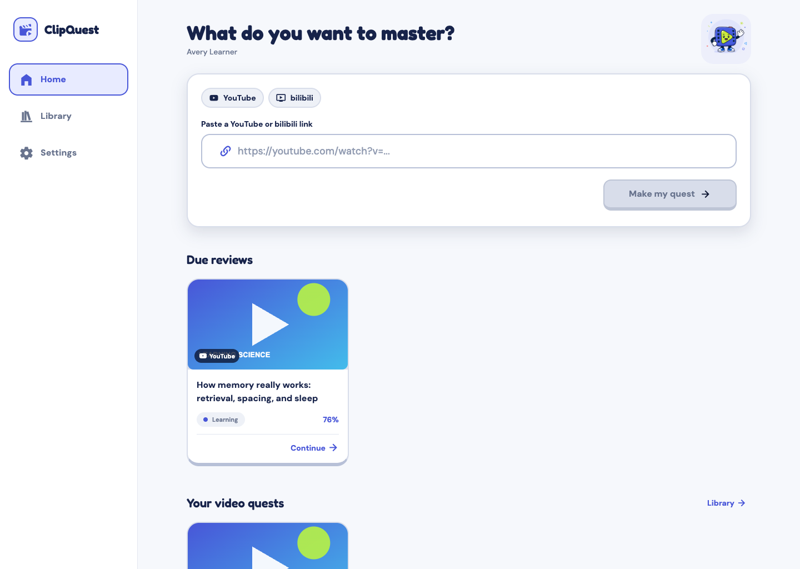
Once the URL validates, ClipQuest previews the detected lesson so the learner confirms the right video, then shows a time-linear generation clock. That clock is fixed-duration and monotonic by design: internal stages cannot reset it or change its speed, because a progress bar that jumps backwards destroys trust faster than a slow one.
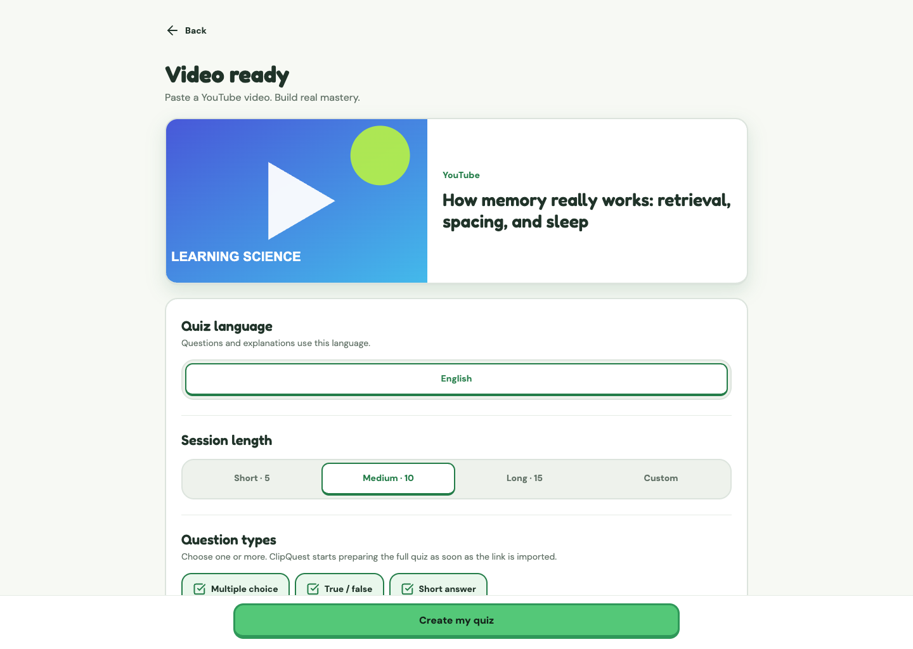
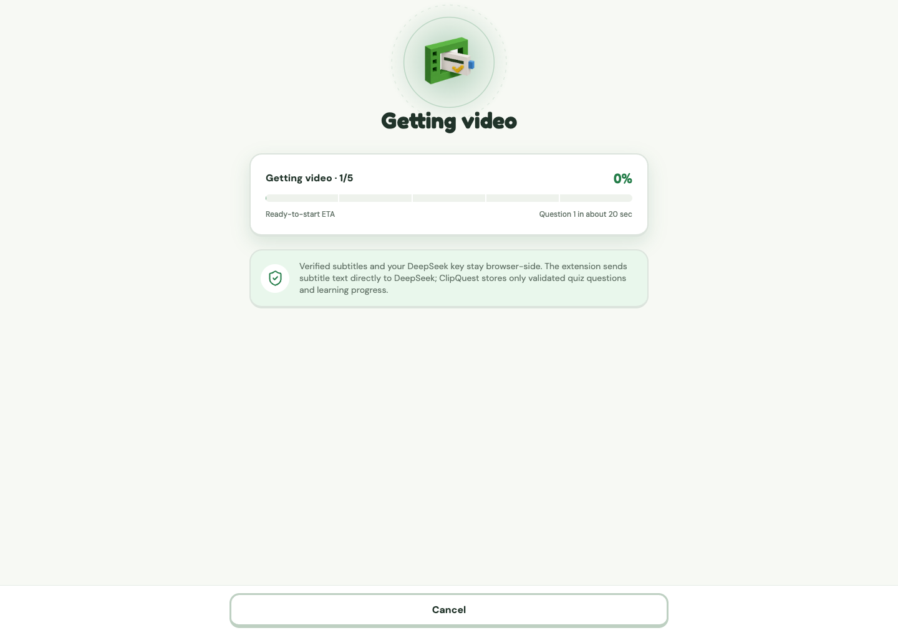
The attempt opens as soon as question 1 is authoritative — the learner starts answering while the rest of the bank is still being generated behind them.
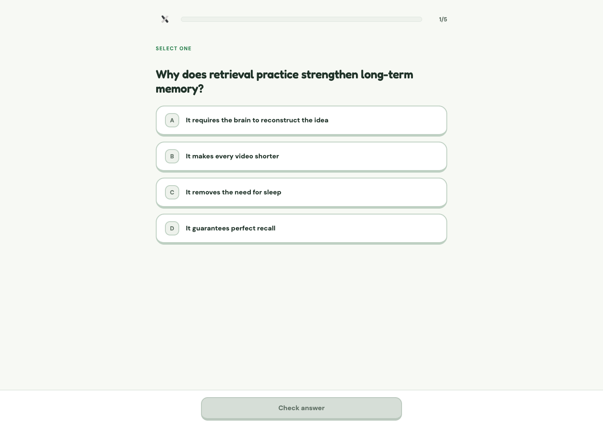
Correct and incorrect states are semantically distinct, not colour-only, and an incorrect answer always surfaces the correct answer plus the reasoning drawn from the lesson.
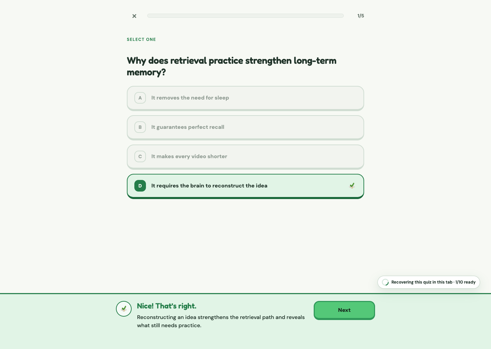
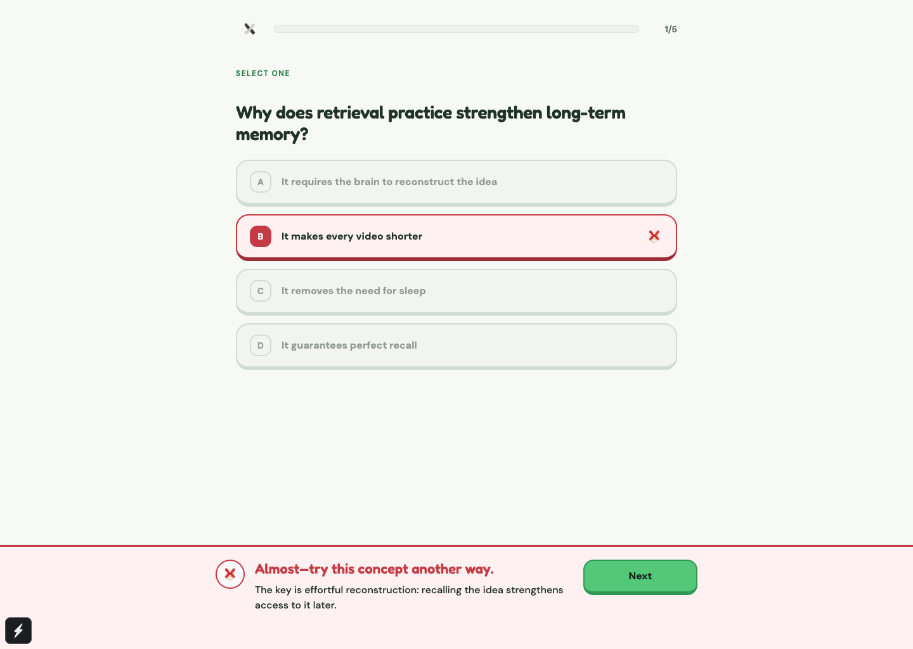
The end of an attempt is not a score screen. It is a study list: the concepts the learner missed, each with the correct answer and the reasoning, ready to be reviewed.
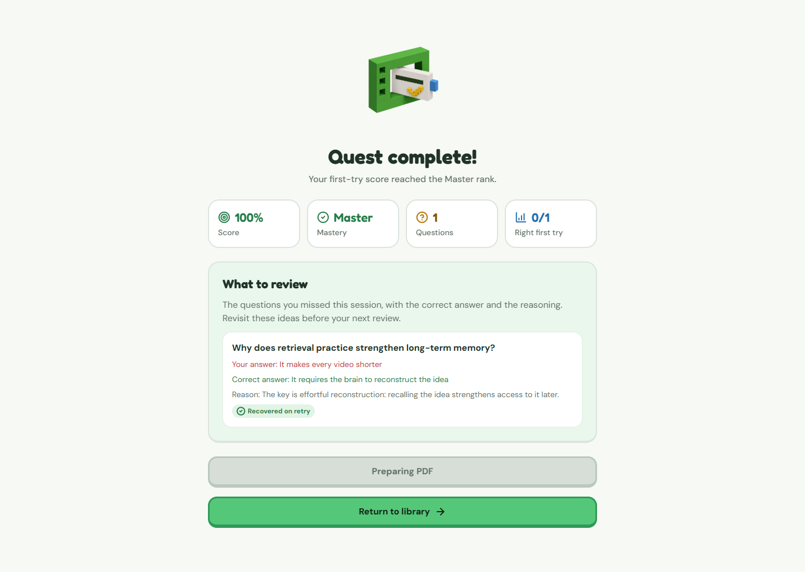
Progress persists. The Library holds every completed lesson with colour-coded mastery and due reviews; the leaderboard and public profiles add social accountability with server-tracked learning time and a year-long activity calendar.
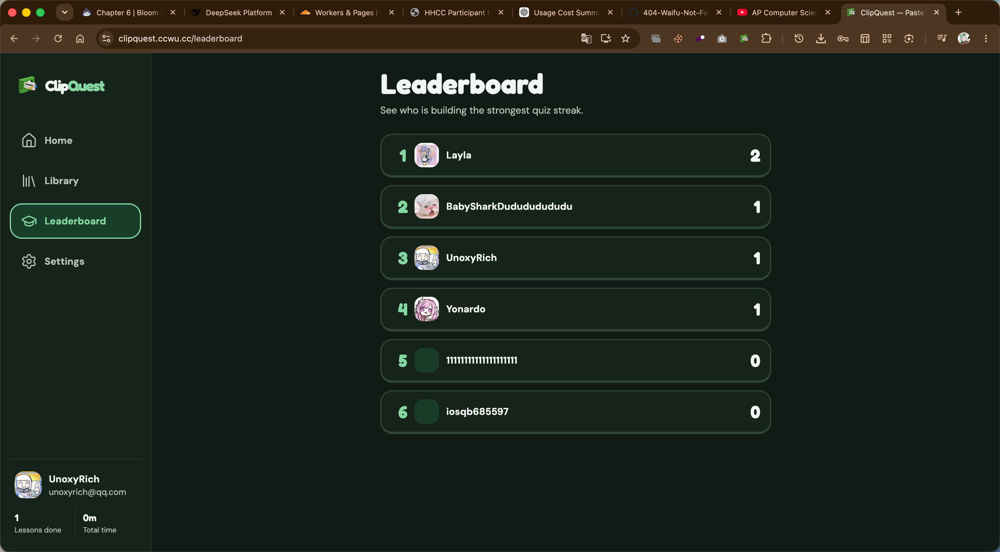
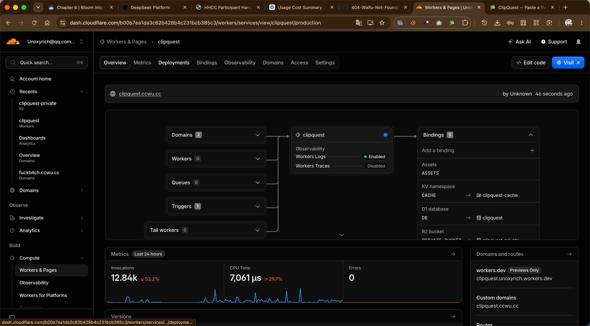
Light and dark are equally supported first-class themes across learner, authentication, quiz, administration, extension, and PWA surfaces — not an inverted afterthought.
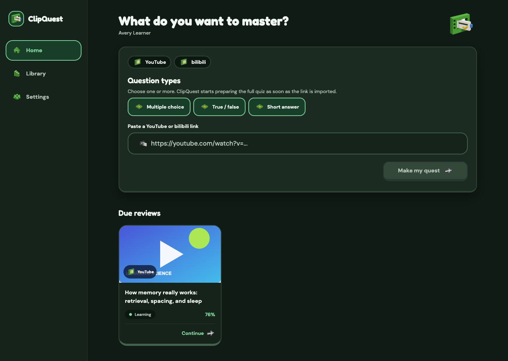
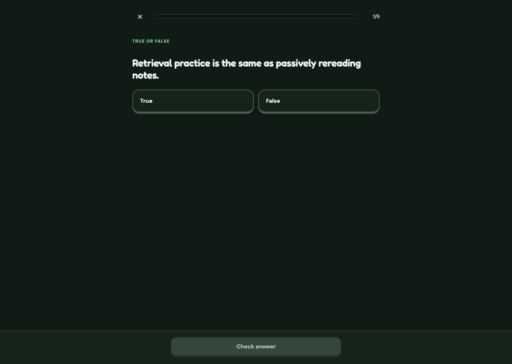
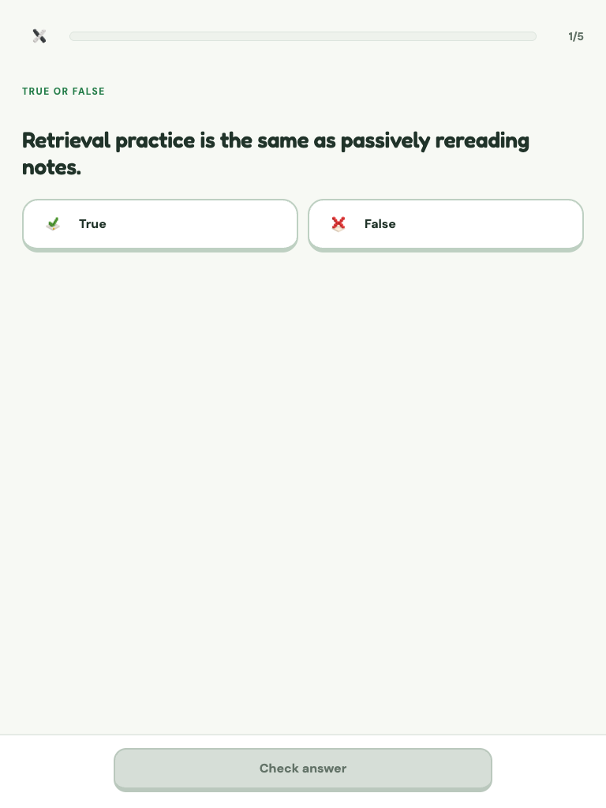
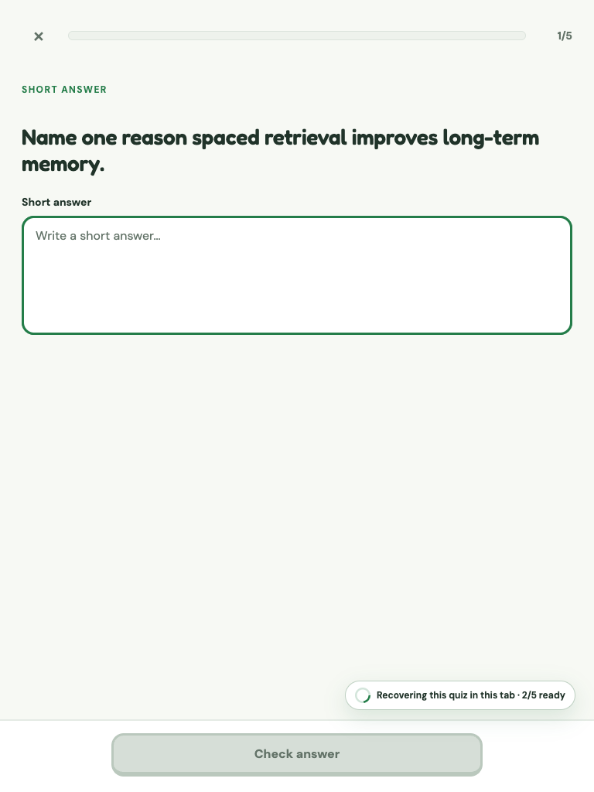
A private, role-gated console for processing overview and user administration, with audited privileged actions.
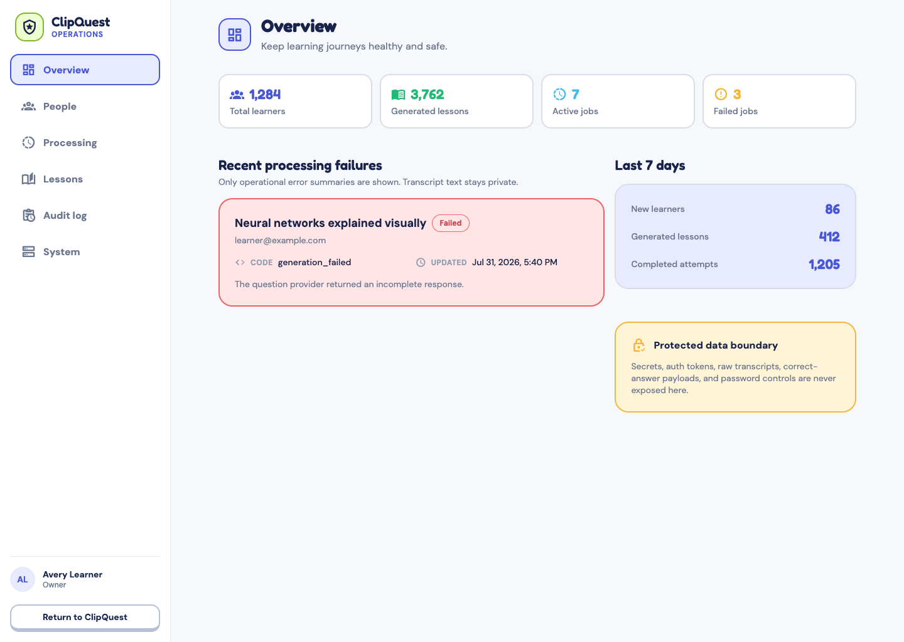
ClipQuest is a monorepo with four runtime surfaces and two shared packages. The shared packages are what keep the surfaces honest: the contracts package is the single source of truth for every protocol, and the local quiz engine is shared verbatim between the Chrome extension and the native clients, so there is exactly one implementation of prompt construction, parsing, validation, and repair.
| Layer | Technology | Responsibility |
|---|---|---|
| Web app | React 19, React DOM, TypeScript | Authentication, paste/import, lesson preview, quiz flow, feedback, completion, mastery, Library, leaderboard, profiles, administration, and themes |
| Browser extension | Chrome Manifest V3, JavaScript | Public caption access, local streamed DeepSeek generation, bounded repair, cancellation, and canonical option randomization |
| Edge API | Cloudflare Workers, Hono, scheduled triggers | Better Auth sessions, ordered storage-only imports, deterministic grading, availability, review scheduling, and static asset serving |
| Data and assets | D1 (SQL), KV, private R2 | Accounts, videos, generating and passed banks, attempts, mastery, profile analytics, rate limits, thumbnails, avatars, and private PDFs |
| Local quiz engine | Shared JavaScript, DeepSeek V4 Flash | Progressive prompts, per-question validation, automatic repair, shuffling, and serialization |
| Shared contracts | TypeScript, Zod | Versioned page protocol, quiz schemas, API requests, and server-side validation |
| Quality and delivery | Vitest, Node test runner, Playwright, ESLint, Prettier, Wrangler | Contract tests, browser journeys, static checks, builds, and deployment |
| Visual identity | Semantic tokens, typed voxel registry, Sharp | Shared light/dark themes and deterministic web and extension assets |
The extension and the page communicate over a versioned result protocol
with exact-origin boundaries, request IDs, payload bounds, cancellation,
and timeouts. The current new-bank contract is result protocol
10, capability question-stream-v2, pipeline
9, prompt quiz-local-json-stream-v5.2, validator
validator-local-progressive-v4.1, and progressive import
v4. Every bank permanently records the prompt, validator,
profile, model, and client-integrity metadata it was built with, so a bank
generated last week is still interpretable after the pipeline moves on.
A conventional design would put generation on the server, where it is easy to control. We deliberately gave that up, and in exchange the Worker became small enough to reason about exhaustively: it authenticates, it validates, it stores in order, it grades deterministically. It has no Queue binding for generation and no fallback question path. This means the failure modes are enumerable — and a whole category of "the AI quietly made something up and the server saved it" bugs is structurally impossible rather than merely unlikely.
| Technology | Where it is used |
|---|---|
| TypeScript | Primary language: web app, Cloudflare Worker, shared contracts, and the majority of tooling |
| React 19 + React DOM | The entire web product interface, routing, and state |
| JavaScript / ESM | Manifest V3 extension runtime, caption processing, local quiz generation, web workers, asset scripts, packaging |
| Cloudflare Workers + Hono | Edge API, routing, middleware, scheduled triggers, static asset delivery |
| Cloudflare D1 (SQL) | 26 ordered migrations covering authentication, quiz storage, reliability, administration, progressive imports, safe call telemetry, recovery claims, and profile analytics |
| Cloudflare KV | Rate limits and short-lived operational state |
| Cloudflare R2 (private) | Thumbnails, avatars, and private PDF artifacts |
| Better Auth | Session management, accounts, and server-side role storage |
| Zod | Runtime schema validation for every protocol boundary and API request |
| DeepSeek V4 Flash | Question generation, called from the learner's browser with the learner's key, thinking disabled, temperature 0.2, JSON-object response mode |
| Chrome Manifest V3 | Background service worker, tab coordination, page bridge, and scoped local key storage |
| Swift / Kotlin | Native iOS and Android client paths reusing the shared local quiz engine |
| Vitest + Node test runner | Unit, contract, API, app, engine, and extension tests |
| Playwright | End-to-end Chrome learner journeys |
| ESLint + Prettier | Repository-wide static analysis and formatting gates |
| Wrangler | Worker bundling, dry runs, migrations, and production deployment |
| Sharp | Deterministic generation of favicon, PWA, and extension artwork derivatives |
| HTML / CSS / Web App Manifest | Extension popup, QA harness, and installable PWA identity |
| GitHub Actions | Continuous integration across tests, types, lint, build, and packaging |
Moving generation into an untrusted browser created the central technical problem of this project: how do you keep a 15-question quiz correct and ordered when any individual model call can fail, truncate, duplicate, or return the wrong type — and you refuse to ever fake a replacement? This is where most of our engineering effort went.
Each completed question object is parsed, validated, and imported on its own. Validation checks the expected ordinal, the requested type, the required fields, the answer mapping, and duplicate prompts. Because items are independent, a malformed question 9 cannot erase questions 1–8. The accepted prefix is preserved and remains answerable.
When a question fails validation, the engine asks DeepSeek to regenerate only the first missing ordinal, passing the exact validation reason and using bounded backoff. There is no unbounded retry loop, and there is no substitution of fallback content. If repair cannot succeed within its bounds, the failure becomes visible rather than being papered over. Accepted questions are never silently replaced.
Every import requires ownership, a UUID idempotency key, a rate-limit allowance, strict pipeline metadata, and the exact next ordinal. Question 1 creates a generating bank and a full-length attempt immediately; later questions append while the learner is already answering. Skipped or conflicting ordinals fail closed. A bank becomes passed, reviewable, and Library-eligible only after all 5, 10, or 15 requested questions have been stored — so an incomplete bank can never be mistaken for a finished lesson.
Because the learner starts answering before the bank is complete, a fast learner can catch up to the generation frontier. When that happens the quiz waits and polls automatically with bounded backoff while the recovery coordinator continues the missing suffix. There is deliberately no manual "continue" button — an earlier iteration had one, and it turned an internal implementation detail into the learner's problem.
Multiple-choice options are securely shuffled before import and shuffled again each time a learner view is activated. Display indexes are mapped back to canonical indexes before submission, so the correct answer is never inferable from position. True/False order stays True-then-False for predictability.
Short answers are graded by the authenticated Worker from a bounded stored rubric — one to three independent required ideas and three to six complete full-credit variants — with a 67% alternative threshold, plus normalization of pronouns, safe acronyms, and conservative domain aliases. Formula answers retain structural grading. Answer writes and mastery updates are guarded by an active grading reservation, and automatic generation appends require a live owner lease, so concurrent tabs cannot corrupt an attempt.
The privacy boundary is architectural, not a policy promise. Data that never crosses a wire cannot be leaked from the other side of it.
chrome.storage.local and is sent only to
https://api.deepseek.com. The ClipQuest page and Worker
never receive it, and it is never part of any ClipQuest protocol.
ClipQuest's interface takes product-craft cues from polished learning software — focused tasks, visible progress, large controls, tactile depth, immediate feedback, generous whitespace — while using independently authored colours, geometry, components, and artwork. Our documented design research explicitly excludes any third-party assets, palettes, characters, proprietary fonts, sounds, copy, or traced illustrations.
| System element | ClipQuest implementation |
|---|---|
| Brand anchor |
Structural green #247D49 with action green
#54C878
|
| Themes | Equally supported light and deep-green dark themes with semantic blue, warning, and error roles |
| Brand object | A non-anthropomorphic "learning prism" built from an interlocking video frame, quiz card, knowledge marker, and companion block — no face, body, limbs, pose, or mood |
| Primary lockup |
The learning prism with a custom-cased Fredoka
ClipQuest wordmark; constrained launcher icons keep the
prism alone
|
| Iconography | Individually generated, transparent, low-density isometric voxel PNGs resolved through a typed static registry — no stock glyph set |
| Typography | Fredoka for short display copy, DM Sans for body and interface copy |
| Interaction | 44 px minimum targets, 16–24 px radii, visible keyboard focus, semantic feedback, and reduced-motion support |
| Platform identity | Deterministic derivatives for favicon, PWA, and browser-extension artwork |
Processing, success, and error states are communicated by status copy, semantic panels, and progress — never by mascot behaviour. This keeps the interface legible to screen readers and to learners with reduced-motion preferences.
The work was genuinely iterative rather than a single planned build. Each stage below addressed a concrete product risk that the previous stage exposed.
| Iteration | Problem or goal | Improvement delivered |
|---|---|---|
| 1. Product foundation | A written idea needed a usable learning flow. | Built the web app, authentication, URL import, lesson preview, quiz flow, feedback, completion state, and Library. |
| 2. Evidence-grounded generation | AI questions needed reliable lesson context. | Added caption-only public YouTube acquisition, normalization, structured DeepSeek generation, strict schemas, and explicit caption failure states. |
| 3. Progressive learning | Waiting for a complete quiz felt slow. | Added question-first progressive generation so the first validated question opens the attempt while the rest continue in bounded batches. |
| 4. Correctness and recovery | A malformed question could break an attempt. | Added ordinal validation, duplicate checks, repair of the first missing question, idempotent imports, cancellation, timeouts, and safe recovery. |
| 5. Mastery loop | A result alone did not create repeatable learning. | Added Library history, colour-coded mastery, review state, progress bars, due reviews, saved lessons, and practice presentation. |
| 6. Cross-platform access | The experience needed to work beyond one browser screen. | Added a Chrome extension bridge plus native iOS and Android paths sharing the local quiz engine and the privacy boundary. |
| 7. Product polish | The first UI needed stronger hierarchy and feedback. | Redesigned cards, hover and theme states, progress treatment, streaming feedback, empty and error states, responsive layouts, accessibility, and reduced motion. |
| 8. Release readiness | A working feature needed repeatable delivery. | Added contracts, migrations, API routes, tests, asset verification, extension packaging, Wrangler deployment, health checks, and release documentation. |
| Area | Pre-event (one week before) | Post-event (submitted here) |
|---|---|---|
| Product state | Short README only | Deployed web product with a browser-extension bridge and native implementation paths |
| Input | Product idea | Public YouTube URL validation, metadata preview, and caption acquisition |
| AI | No implemented AI flow | Learner-owned DeepSeek key used locally for structured, schema-validated question generation |
| Learning | No quiz experience | Multiple-choice, true/false, and short-answer quizzes with immediate corrective feedback |
| Progress | No persistence or mastery model | Authenticated attempts, ordered storage, mastery ranks, review state, and Library |
| Reliability | No validation or recovery | Contract validation, bounded retries, first-missing-ordinal repair, cancellation, timeouts, and idempotency |
| UX | No interface | Responsive UI with light/dark themes, motion, accessibility, and clear states |
| Platforms | No working client | Web, Chrome extension bridge, iOS path, and Android path sharing core logic |
| Delivery | No deployment | Cloudflare Worker and static assets deployed at clipquest.ccwu.cc |
| Verification | No test suite | Automated contract, API, app, engine, extension, UI, build, and asset checks |
| Brand | No visual identity | Original palette, learning-prism brand object, custom lockup, voxel icon registry, and dual themes |
The 22 August 2026 source gate passed 138 unit, contract, API, app, and extension tests plus 21 Playwright Chrome journeys, together with repository-wide TypeScript and ESLint checks, the web build, extension packaging, Worker bundling, and a Wrangler dry run.
We re-ran the ten-video matrix on 22 August 2026 against
real public YouTube captions and the real DeepSeek API
using the headless QA harness (npm run qa:quiz) with a local
key, ten questions per video, all three question types, and
reference-answer grading enabled. Unlike the earlier run, this one
actually exercised the prompt-first v5.12 profile
(quiz-local-json-stream-v5.12, validator
validator-minimal-gradeability-v5.3, import
extension-progressive-import-v8, protocol 10, pipeline 9).
| Metric | Result |
|---|---|
| Videos attempted | 10 |
| Reached question 1 (progressive entry) | 10 / 10 |
| Complete 10-question banks, first attempt | 5 / 10 |
| Complete banks after one re-attempt | 8 / 10 |
| Questions stored across complete banks | 80 (80 unique prompts, zero duplicates) |
| Model calls / automatic bounded retries | 80 / 13 |
| Fallback or invented questions emitted | 0 |
| Time to question 1 — median / mean / max | 19.9 s / 22.0 s / 41.8 s |
| Deterministic grading on reference answers | 80 / 80 correct |
| Validator, duplicate, fragmentary, and consistency audits | 80 / 80 PASS each |
The defect that blocked our previous release gate is gone. Prompts containing "According to" fell from 79/100 to 0/80, "According to the lesson" from 26/100 to 0/80, and the display-time prefix sanitizer that visibly corrupted at least five prompts now corrupts none. All 80 stored prompts are unique and pass the production validator.
Five of ten videos did not produce a complete bank on the first attempt.
Both failure messages share a single root cause: a
question_answer_kind_mismatch outcome on one ordinal that
repeated until its three bounded structural retries were exhausted.
question_answer_kind_mismatch is our next
task.
Net position: this re-run clears progressive entry, the
storage-only privacy boundary, the no-fallback guarantee, content
acceptance, and deterministic grading — and
does not clear zero-intervention completion. We consider it more
valuable to show judges a real, instrumented, partially-failing production
run than a green mock suite: our Playwright journeys use contract-shaped
mocked responses, and we warn in our own documentation that a green UI
suite is not proof of live caption access or a completed learner
flow. Full artifacts for every run, including per-call event streams, are
committed under output/headless/matrix-2026-08-22/, with the
complete write-up in docs/QA-HEADLESS-MATRIX-2026-08-22.md.
The in-development Workplace AI chat route is hidden from navigation for every user and redirects to Library. Its source stays behind a shared release gate. We chose to gate it rather than demo an unfinished feature.
The live /health response and the Wrangler deployment history
— not a version number typed into a document — are the authoritative
production checks. Health exposes model and pipeline versions plus
backendQuizGeneration, extensionQuizGeneration,
and extensionRequired readiness flags without exposing
secrets.
Four members, one shared codebase. We worked with collective ownership of the core — every member committed to the web app, the API, and the extension — while each person led a primary area and owned the decisions in it. Commit counts below are from the public Git history.
| Member | Primary role | Commits | Led |
|---|---|---|---|
| UnoxyRich | Project lead & architecture | 160 | Product concept and scope, monorepo architecture, the caption-only privacy boundary, the edge API and D1 schema design, deployment and release management, and the production QA matrix |
| Layla | Frontend & design system | 120 | Web application interface, the learner journey, the original visual system, light/dark theme parity, responsive layouts, accessibility, motion, and the screenshot/asset pipeline |
| Justin-Yonardo | Generation engine & QA | 111 | The shared local quiz engine, prompt and validator design, bounded repair and recovery logic, Chrome extension internals, and the Playwright end-to-end journey suite |
| JimmyfaQwQ | Backend, data & platform | 87 | Worker routes, Better Auth integration, migrations, deterministic short-answer grading, mastery and review scheduling, the community/leaderboard layer, and the operations console |
packages/contracts is the artifact of that
decision.
Declared per the HHCC 2026 Participant Handbook's AI Usage Guidelines.
| Item | Declaration |
|---|---|
| Tools used | GitHub Copilot and Claude Code CLI |
| Usage cost | Approximately $240 in API-token usage across all tools |
| Purpose | Boilerplate and repetitive code, syntax lookup and autocomplete, refactoring and code formatting, documentation drafting, and debugging assistance |
| Team-originated | Core product concept and UX flow; feature scope and design decisions; project architecture and file structure; the caption-only privacy boundary; key algorithms including validation, repair, ordering, and grading; the mastery and review model; testing strategy and CI setup; and all visual and creative direction |
| Not done by AI | No module was submitted that the team does not understand. Every member can explain the principles and implementation of the code in their area on request during Q&A. |
All implementation code for the event iteration was written in this project repository during the official hacking period. AI served strictly as an auxiliary coding tool; all key decisions, concepts, and creative direction were developed by the team.
Self-directed learners who already rely on free educational video: secondary and university students revising from recorded lectures, self-taught developers and designers, exam candidates, and adult learners in regions where paid course platforms are out of reach. ClipQuest requires no institution, no enrolment, and no curriculum licence — only a link.
Because inference runs in the learner's browser on the learner's own key, our marginal cost per generated quiz is zero. The server does authentication, validated storage, and deterministic grading — all of which run comfortably on Cloudflare's edge at a cost that scales with storage rather than with tokens. This is what allows the core learning loop to stay free without a paywall on the thing that matters.
| Dimension | Position |
|---|---|
| Core loop | Free, learner-key powered, no per-quiz charge |
| Future revenue | Optional managed-key convenience tier, classroom/cohort dashboards for educators, and institutional deployment of the same self-hosted stack |
| Content sustainability | Uses public captions of videos the learner already has access to; creates no scraped content library and stores no transcripts |
| Environmental cost | Edge-only backend, no always-on servers, no audio download or transcription, and small non-thinking model calls at temperature 0.2 |
| Risk handling | Public-caption-only sourcing, no OAuth into personal YouTube data, fail-closed on missing captions, and audited privileged operations |
| Openness | Apache-2.0 licensed and fully public, so institutions can self-host and audit it |
Accessibility was treated as part of the feature rather than a compliance pass: 44 px minimum targets, visible keyboard focus, semantic (not colour-only) feedback states, reduced-motion support, full light/dark parity, and responsive layouts down to tablet and mobile. A learning tool that only works for able-bodied users on a large desktop screen is not an accessible learning tool.
question_answer_kind_mismatch. This
single outcome is now the only thing standing between us and a clean
matrix: it exhausted the three bounded structural retries on one ordinal
in five of ten first-pass runs. AP Physics 1 Kinematics
(qP-9wwRrJbg) and AP Calculus AB Unit 1
(G8zkXA5TXgg) failed both passes and are our reproduction
cases.
absolute_wording NOTICE results, which
are advisory today but indicate prompt phrasing worth tightening.
| Resource | Location |
|---|---|
| Live product | https://clipquest.ccwu.cc |
| Repository | https://github.com/404-Waifu-Not-Found/HHCC2026 |
| Engineering reference |
README.md — includes a judge briefing mapped to the
scoring dimensions
|
| Iteration overview | docs/ITERATION-OVERVIEW.md |
| Learning-science brief | docs/HACKATHON.md |
| Headless matrix re-run |
docs/QA-HEADLESS-MATRIX-2026-08-22.md — the section 15.2
evidence
|
| Live QA report | docs/QA-YOUTUBE-BROWSER-10X-2026-08-22.md |
| Progressive generation QA | docs/QA-FIRST-QUESTION-ETA-2026-08-22.md |
| Production release guide | docs/PRODUCTION-RELEASE.md |
| Design research boundary | docs/duolingo-ui-research.md |
| Operations console | docs/ADMIN-CONSOLE.md |
| Licence | Apache-2.0 |
To confirm that all product code was written during the 36-hour period,
clone the repository and run
git log --format='%ad %an %s' --date=iso --reverse. The
first product commit and the last both fall inside 21–22 August 2026.
Nothing was squashed, back-dated, or imported from a prior repository.
ClipQuest · Team 404-Waifu-Not-Found · HackHarvard China Challenge 2026 · Iteration Track, Education theme · https://clipquest.ccwu.cc · Apache-2.0